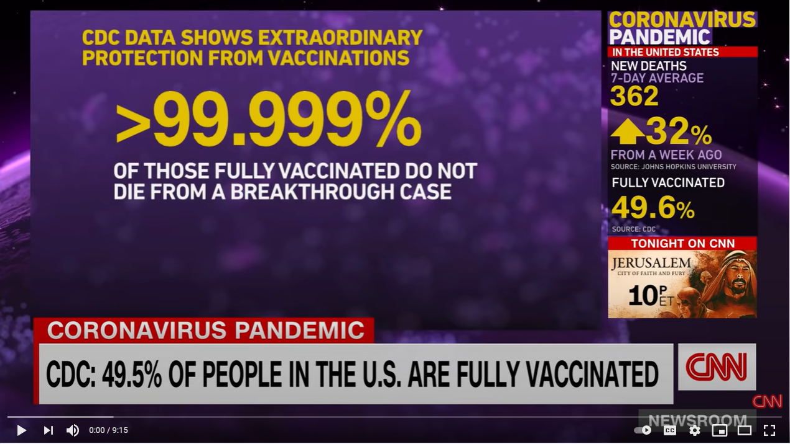
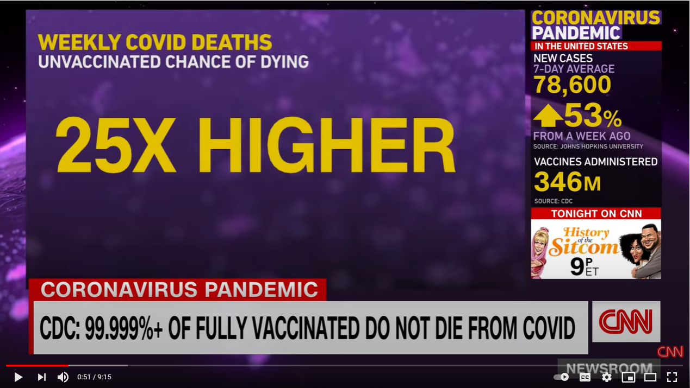

The goals of this course are for students to:
Learn how to structure a logical argument. This includes:
Expressing a clear opinion.
Developing and expressing strongly connected reasons.
Presenting supporting evidence.
Identify bias in a news report.
Understand the difference between facts and fake news.
Apply the concepts of logical reasoning in a meeting simulation.
Here are some key concepts we will refer to throughout this course. Read and discuss them with your instructor so you can understand each of them clearly.
Logical speaking is the combination of two things: speaking clearly and reasoning logically.
Speaking clearly refers to the organization of your speech so that your ideas are clearly connected and easily understood by your audience.
Reasoning logically refers to the connection of your ideas and how you form your opinions. Reasoning is your thought process.
An opinion is an idea which is the result of your thinking process based on the evidence you have access to.
Evidence is the information you have which makes you believe something is true. There are many types of evidence. Some of them are more valuable than others.
When you can speak logically, you can persuade your colleagues and your counterparts to accept your ideas. This process of persuading others is called argument. We use argument to show that something is true, or correct.
Argument is not debate. Argument shows the depth of your understanding of a topic. The goal of argument is to persuade, not to win points by taking a strong position.
Built in Greece between 447 and 438 BC, the Parthenon remains the most important surviving building of classical Greece. Because of its ability to endure for more than 2,500 years, the Parthenon is seen as an example of strength, durability and robustness and is often used to explain the concepts of argument. The idea of argument also came from classical Greece. Aristotle (384–322BC), often called ‘the father of logic’, described logical reasoning in his writings, and today we still refer to many of his ideas.
Opinion?
Reasons?
Evidence?
As far as I’m concerned, the government should mandate COVID-19 vaccinations. The reason for this is clear: The longer most of the population goes unvaccinated, the greater chance there is of dangerous variants developing which could get past the current vaccines, making the current vaccines effectively useless. Already the Delta variant has proven very difficult to manage. All over the world we are starting to see breakthrough infections (vaccinated people contracting the disease). The World Health Organisation already lists four variants of concern (alpha, beta, gamma and delta), and more are sure to come. It’s essential that we increase the number of vaccinated people to reduce the opportunity for viral variants to develop, and the only way to do that is to make it a requirement for all citizens to get the vaccine.
The opinion statement?
The reason?
The evidence?
Do you agree with the argument above? Why? Why not? Give your opinion with a reason, and if possible, provide evidence to support it.
Opinion is defined in the Oxford Learner’s Dictionary as:
Your feelings or thoughts about somebody/something, rather than a fact.
The beliefs or views of a group of people.
Advice from a professional person.
There are three important points we can learn from this:
Opinion can be private or public – you can have your own opinion, or you can share an opinion with others.
Opinion is not fact.
Opinion can be feelings, thoughts, beliefs, views or an expert’s advice.
What phrases do you commonly use to express your opinion in English?
Read the following opinion phrases. Then, underline the part or parts of the sentences above which indicate the speaker is sharing an opinion. Give each phrase a rating from 1 to 5, where 1 is very weak and 5 is very strong.
|
|---|
|
|
|
|
|
|
|
| Business Topics | General Topics |
|---|---|
|
|
|
|
|
|
|
|
|
|
In my opinion, the managers (business leaders) need to communicate clearly with their staff. Otherwise, there can be misunderstandings.
I was happy to see sports climbing included in the Tokyo 2020 Olympics. In my opinion, it’s one of the most challenging sports you can compete in.
Reasoning is your thinking process. Logical reasoning makes clear and strong connections between evidence and opinions. It is an essential part of logical speaking.
Conjunctions are words which connect two ideas together. ‘And’, ‘but’ and ‘or’ are common conjunctions. We commonly use conjunctions for simple reasoning.
| because | due to | as a result | that’s why |
|---|---|---|---|
| consequently | so | since | in order to |
We haven’t finished the report, ____________________ we should cancel our meeting on Monday.
____________________ an accident on the highway, I missed the meeting.
The project had some unexpected delays. ____________________ we went over budget.
The plane was late arriving in Sydney. ____________________ I missed my connecting flight.
I had problems with my computer all day ____________________ I had to stay late on Friday.
I got into the office early this morning ____________________ finish my work on the sales report.
I am late ____________________ my car broke down.
Discourse markers are words or phrases like anyway, right, okay, as I say, and to begin with. We use them to connect, organise and manage what we say or write, or to express attitude.
| Communication Function | Example 1 | Example 2 |
|---|---|---|
|
for instance | |
|
actually | |
|
on the other hand | |
|
what’s more | |
|
at least | |
|
that’s why | |
|
usually | |
|
in short |
Write another discourse marker for each communication function in the table above.
Practice making sentences with the discourse markers. Choose from the topics below:
| Business Topics | General Topics |
|---|---|
|
|
|
|
|
|
|
|
|
|
As we learned above, linking words can be used to order or sequence what we say. This is very important in logical speaking because the information you share in your argument must be presented in a logical order.
Some of the common words and phrases which we use for this are:
| and | in general | second | to sum up |
|---|---|---|---|
| and then | in the end | *secondly | what’s more |
| first (of all) | last of all | so | well |
| *firstly | next | lastly | a … b |
| for a start | on top of that | third(ly) | finally |
* ‘firstly’ and ‘secondly’ are more formal than ‘first’ and ‘second’.
Use the vocabulary in the table above to add order and organisation in the activities below.
Look at your work schedule and explain what you did on a busy day last week.
Explain a simple process in your office, for example, how to use the photocopier, or how to book a meeting room.
Answer the following questions and think of reasons to support your answers. Share your answers and your reasons with a partner. Try to use conjunctions and discourse markers, and order your sentences to make clear and logical connections.
Why did you join your organization?
What do you like most about your job? Why?
Who do you admire at work? Why?
What do you want to achieve in the next three years? Why?
Evidence is the information which causes us to believe something is true. The more evidence there is, the more likely it is to be true. Evidence is the foundation of logical speaking. The type and amount of evidence you use to support your opinions will determine how effective you will be at persuading others.
| Category | Type | Validity | Example |
|---|---|---|---|
| Facts | Statistics and data | Very strong | 94% of all customer surveys collected in the last 12 months indicate customers are very satisfied with our service. |
| Historical events | Very strong | On March 11, 2011, Japan experienced a magnitude 9 earthquake and a 39-meter tsunami. | |
| Objective information | Very strong | The distance between Tokyo and Osaka is 498.9 km on the Tokaido Highway. | |
| Case studies and scientific research | Strong to very strong | In 2016, the Avanti Staff staffing company participated in a study to investigate the current market situation and its growth factors. The study found… | |
| Judgment | Analogy | Weak to moderate | We are in the same situation as the Osaka branch, and they had great success. |
| Testimony | Expert opinion | Moderate | According to our CEO, the best way to grow the business is through an M&A strategy. |
| Personal experience | Weak | Last year, I went on a business trip to Brazil. I found Brazilians to be very friendly and open. | |
| Eyewitness accounts | Weak to moderate | I participated in a meeting last week in which the Department Manager said we need to cut costs greatly. |
When evaluating evidence, consider the following:
What is the purpose of the source of the evidence? Who is the audience?
Is the information credible? Who is the author, and what are her qualifications? Is the publisher reputable and reliable?
Is the information current and relevant?
Is the information objective, or is it biased to support an agenda (political, religious, social or commercial)?
Is the information accurate and reliable? It is well researched and referenced? What is the data collection methodology?
For each opinion statement below, create a reason and supporting evidence.
| Opinion | I believe employees in our company work too much overtime. |
|---|---|
| Reason | This is because our staff always seem tired and recently many have called in sick. |
| Evidence | The company’s last quarterly report shows overtime costs are at almost 47% and use of sick leave has increased 12%. |
| Opinion | In my opinion, our products are too expensive for the average customer. |
|---|---|
| Reason | |
| Evidence |
| Opinion | I think staff in the office want to work remotely more often. |
|---|---|
| Reason | |
| Evidence |
| Opinion | From my point of view, customers want high quality products. |
|---|---|
| Reason | |
| Evidence |
| Opinion | In my opinion, celebrity endorsements are the best way to sell a product. |
|---|---|
| Reason | |
| Evidence |
| Opinion | As far as I’m concerned, (your choice.) |
|---|---|
| Reason | |
| Evidence |
The US news organization, CNN, presented a news story at the beginning of August 2021 regarding the COVID situation in America.
You can watch the video here: https://www.youtube.com/watch?v=b442uKKMnmE.
Here are two screenshots from the video about the rates of surviving a COVID infection. The first image shows the survival rate for fully vaccinated individuals, and the second one shows the chance of dying for unvaccinated people.
|
 |
|---|
|
 |
|---|
Logically, the math then becomes 25 x 0.001%, so 0.025%. This then also means the unvaccinated have a 99.975% chance of surviving a COVID infection, based on this information at the time. However, CNN did not present the information this way. First, they showed survival rates for vaccinated people, and then they showed death rates for unvaccinated people. These are different types of information.
What is bias in the media?
What is CNN’s purpose in choosing to present the evidence the way they did? Do you think they have an agenda? If so, what could it be?
Can we trust all data that is presented as evidence?
Is the logical reasoning in these statements strong or weak? Read, discuss and decide with a partner.
I’m not getting the vaccine because I don’t trust it. It was developed too quickly for it to be safe.
According to the Centers for Disease Control and Prevention in the United States, less than one percent of people who are fully vaccinated end up in hospital if they catch COVID. The vaccine is both safe and effective at preventing serious disease.
We hired a market research company in 2018 to investigate customer’s motivations for buying our products. The company contacted around 10,000 customers to conduct the survey. 76% of respondents said they look first at price when making a purchase decision. Therefore, I think we need to think carefully about our pricing for next year’s sales strategy.
In my last company we were successful at increasing our sales by discounting our prices in a summer campaign. I think these short-term discounts can incentivize customers to commit to a purchase. We could have a lot of success if we do it here.
My boss used to go to school with the governor of the Bank of Japan. He thinks the economy will go back to normal by the middle of next year after COVID goes away.
The Bank of Japan’s Outlook for Economic Activity and Prices, released in June 2021, states that confidence in the markets will improve by the end of the year as long as the government can keep to its plan of having most people vaccinated by November.
If I go to the same Pachinko place at the same time every day, I am sure to eventually win big and get my money back. I watched a YouTube video about how some university students won 3.5 million dollars on the lotto using math, so my system is guaranteed to succeed. With my system, I am sure to win.
Most medical experts now agree that cardio exercise does little to help with weight loss. In fact, many scientific studies done over the last ten years show that weight training makes a greater contribution to weight loss than cardio activities. Therefore, if you want to lose weight at the gym, you should lift weights.
A comprehensive study conducted by Cornell University in the US between 2010 and 2016 shows that students who did a study abroad year while completing their university degrees tested higher on psychological tests for empathy, flexibility and interpersonal communication.
Many people say travel broadens the mind, so I believe I will become a better person from traveling.
Think of a current issue and share your opinion. Support it with reasons and evidence, and then ask your partner to evaluate the logic in your argument.
Traditionally, facts have been considered one of the strongest types of evidence and they are commonly researched and verified in order to support an argument. The Oxford Dictionary explains a fact is ‘a thing that is known to be true, especially when it can be proved’. Recently, in some parts of the world, factual evidence seems to be losing its ability to persuade people. Fake news has become a significant problem on social networking sites, and even some quasi-news organisations. Fake news is information on websites and other media which looks like real news, except it is not true, or it is partially true, but the information is incomplete.
In many instances, fake news is purposely designed to confuse people and lead to misunderstanding. In the 2016 US Presidential election, fake news on Facebook and other social media sites was considered an important factor in the election result. However, fake news is usually easy to spot and counter.
First, develop a healthily skeptical attitude. If you are looking at a website which has a history of distributing fake news, do not allow yourself to automatically accept the information you find on the site. Instead, try to confirm it in at least two or a few different and reliable sources. And before you share the information, make sure you have done your research to confirm it, otherwise you will be to blame for spreading untruths.
Do you know any examples of fake news?
How do you know the information is fake?
How common is fake news in Japan? Do you think it will become a bigger issue in the future?
In business, we most commonly use logical speaking to support proposals and to explain decision-making. It is a key part of problem solving and business reporting. There are a few different ways of presenting information to explain decisions, all of which involve logical reasoning.
PBSR is a simple model for reporting on problem solving. Here is an example:
| Problem | The sales of our language training service have dropped 50% on average for each quarter since the COVID-19 pandemic and the first declaration of a state of emergency in Tokyo in April 2020. This is a big problem for us because we are not making any profit. Therefore the company will have to decide whether to downsize in order to cut costs. |
|---|---|
| Background | Before the pandemic, we were doing well. We achieved our sales targets, and our client feedback was very positive. Our language training business grew 20% in 2019. The market in general was growing at a rate of about 5% per quarter. |
| Solution | I believe that in order to quickly return to a profitable business model, we have to take a two-pronged approach: First, we need to increase sales. Second, we need to cut costs. We need to develop a sales strategy that addresses the concerns of our clients and offer them online training at a reduced cost to encourage a speedy response. Short-term sales campaigns at discounted prices have been effective in the past at doing this. At the same time, we need to do a thorough cost analysis of our expenditure and cut costs by at least 30 percent. All options for cost cutting must be considered. According to consulting agency Deloitte Tohmatsu Consulting, most organisations in Japan run with large overheads and can usually find ways to quickly cut costs by 20%. We will need to do a bit more than that. |
| Result | The combination of reduced costs and increased sales volume, even at a lower cost per unit, should see us return to profitability within six months. |
Notes:
In this model, your opinion and its supporting evidence become part of the solution.
If you are giving a report on past events, then the result should reflect the outcome of the action and the current situation. However, if you are making a suggestion to deal with a current problem (as in the example above), then the result should indicate your expected outcomes.
We can also use PBSR as a model for asking for and giving suggestions or advice. Look at the following example of a junior staff member talking with his more experienced senior colleague.
Shin: I’ve got a problem at work and I’m not sure how to deal with it.
Andre: What’s the problem?
Shin: Well, I made a mistake with a customer’s invoice, and I sent the wrong amount. We overcharged him.
Andre: What’s the situation?
Shin: This is a customer we have worked with for a long time, and I recently became responsible for their orders. Because they have been our customer for a long time, they get a special discount on their orders, but I didn’t know that, so I charged them the full amount.
Andre: I see. Have you contacted them? They have been with your company a long time, and your mistake is understandable. I’m sure that if you contact the customer, explain your mistake and apologise, and then issue a corrected invoice, they will be fine with it.
Shin: Yes, you’re probably right. I’ll call them first thing tomorrow.
The problem.
The background.
The solution.
The result.
Choose from one of the following topics and write an argument expressing your opinion with reasons and evidence to support it. If you do not know any evidence, make it up for this practice activity (but in real life, always use real evidence!).
| The best company in the world is… | The best way to attract great employees is… | Companies should allow four-day work weeks. |
|---|---|---|
| The best way to motivate staff is to pay them well. | Companies need to pay more in taxes. | The best managers lead by example. |
| Nowadays, we should be able to wear more casual clothes at work. | English training should be provided and paid for by the company. | Staff don’t get enough formal training. |
| SNS is a valid form of business communication. | Business meetings are usually a waste of time. | Your choice |
The model introduced in this unit takes a balanced approach and looks at both sides of the argument but makes a final suggestion in favour of a preferred idea. This is useful when you know what both sides of the argument are as you can explain why your idea is better than the alternative.
In this model:
Point is your idea, opinion or suggestion.
Counterpoint is a common but different (and sometimes opposing) idea to yours.
Against is your reasoning for rejecting the counterpoint.
For is your reasoning for supporting your point.
Look at the following example.
| Point | To become more profitable, we should invest in developing new products. |
|---|---|
| Counterpoint | Some people think we should just cut costs. |
| Against | It’s true that cost-cutting is important, but it is really a temporary solution if we want to grow. |
| For | However, investing in new products can lead to market growth and new sales revenue as we attract new customers. This will lead to profit. |
Choose from the following topics. Brainstorm PCAF points for each one with a partner, and then present your ideas in teams.
Is the death penalty effective?
Is competition good for kids?
Is buying a lottery ticket a good idea?
Should companies be allowed to advertise to children?
Should companies hire SNS influencers to promote their products?
Are loyalty programs an effective marketing strategy?
Are chatbots effective tools for customer service?
Should companies allow employees to bring their pets to work?
Choose from one of the following topics and write an argument expressing your opinion with reasons and evidence to support it. If you do not know any evidence, make it up for this practice activity (but in real life, always use real evidence!).
| The best company in the world is… | The best way to attract great employees is… | Companies should allow four-day work weeks. |
|---|---|---|
| The best way to motivate staff is to pay them well. | Companies need to pay more in taxes. | The best managers lead by example. |
| Nowadays, we should be able to wear more casual clothes at work. | English training should be provided and paid for by the company. | Staff don’t get enough formal training. |
| SNS is a valid form of business communication. | Business meetings are usually a waste of time. | Your choice |
Your company sells frozen meals at convenience stores and supermarket chains across the country. Recently, you launched a new line of pre-packed frozen meals. Your company invested a lot of money on the promotion of the new line, including hiring a famous actor to endorse it. This new product line uses a new technology to flash freeze the product.
A recent paper published in a scientific journal claims that eating the food produced by the new technology may result in a higher risk of heart attack. This was shown in one six-month study of 30 lab mice.
A science news reporter has contacted you to talk about the research and how it impacts your new line. He wants to know what action you will take.
You will join an emergency meeting to discuss the issue. You need to answer the following questions:
What is the real risk to the consumer?
What could the impact be on the company? Consider different scenarios.
How should the company respond?
Now, have the meeting and make arguments responding to each of the questions. Make decisions about how to address the problem.
Think about the meeting you just had, and answer the following questions. For each question, give yourself a score from 1 to 5, where 1 is ‘Not at all’, and 5 is ‘Definitely’.
Were you able to clearly share your opinion?
Did you provide reasons to support your opinions?
Could you support your opinions with credible evidence that was logically connected to both your reasons and your opinions?
Were you able to persuade others to accept your ideas?
Share your answers with your classmates, and your instructor. Explain what you would do differently in your next meeting to improve the result of the meeting.
PBSR is an adaptation of global management consulting firm McKinsey’s Situation-Complication-Resolution (SCR) framework.↩︎